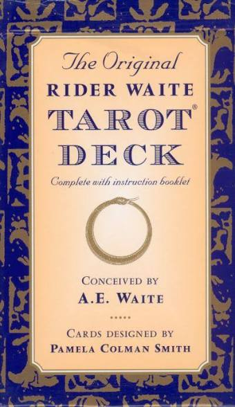
O tarot Waite-Smith é um conjunto de 78 cartas divididas em arcanos maiores e menores que utiliza símbolos ricos e detalhados para transmitir significados profundos. Cada carta possui elementos visuais que representam diferentes aspectos da vida, da espiritualidade e do inconsciente.
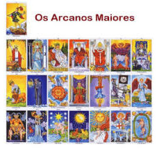
Os arcanos maiores são compostos por 22 cartas que representam arquétipos universais e experiências significativas da vida. Cada carta possui uma simbologia única que pode ser interpretada de diferentes maneiras, dependendo do contexto da leitura.
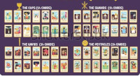
Os arcanos menores são compostos por 56 cartas que representam aspectos mais cotidianos da vida, como emoções, pensamentos e situações do dia a dia. Cada carta possui símbolos que refletem diferentes facetas da experiência humana.
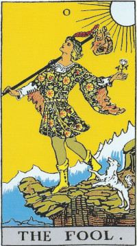
O Louco aparece caminhando em direção ao desconhecido. Sua postura transmite liberdade, espontaneidade e entusiasmo. Ele não parece preso às regras ou às expectativas das outras pessoas. Está começando uma jornada sem saber exatamente o que encontrará. A figura representa:
O Louco pode ser alguém que está iniciando uma fase completamente nova da vida.
O rosto do Louco demonstra tranquilidade e curiosidade. Ele não parece estar olhando diretamente para o caminho à sua frente. Seu olhar está voltado para cima ou para o horizonte, como se estivesse concentrado nas possibilidades e não nos perigos imediatos. Isso pode representar:
Seu olhar mostra tanto a beleza de confiar na vida quanto a necessidade de prestar mais atenção ao caminho.
O Louco está em movimento. Ele não está sentado, preso ou esperando que alguém decida por ele. Sua caminhada representa o primeiro passo de uma jornada. Para começar algo novo, é necessário abandonar uma posição conhecida e se colocar em movimento. Essa caminhada pode simbolizar:
O Louco não possui certeza sobre o destino, mas aceita começar mesmo assim.
O Louco está próximo de uma queda. Essa imagem é uma das mais importantes da carta. O precipício representa:
Ele pode estar prestes a cair porque não percebe o perigo ou pode estar chegando a um ponto em que precisará dar um salto de fé. A carta não diz simplesmente que todo risco é ruim. Ela mostra que começar algo novo sempre envolve algum grau de incerteza. Porém, também alerta que confiança sem atenção pode se transformar em imprudência.
A trouxa presa ao bastão representa tudo aquilo que o Louco carrega consigo. Ela pode simbolizar:
A trouxa é pequena, mostrando que ele não está sobrecarregado por muitos objetos ou preocupações. Ele viaja com pouco e demonstra desapego. Ao mesmo tempo, o conteúdo da trouxa está escondido. Isso sugere que o próprio Louco talvez ainda não saiba completamente quais habilidades e recursos possui.
O bastão apoia a trouxa e ajuda o Louco durante a caminhada. Ele representa:
O bastão também pode indicar que, mesmo parecendo despreparado, o Louco possui alguma estrutura para iniciar sua jornada. Ele não está completamente sem recursos. Carrega ferramentas, experiências e uma força interior que serão descobertas durante o caminho.
O cachorro aparece próximo ao Louco e representa instinto, lealdade e proteção. Ele pode estar tentando chamar a atenção do Louco para o perigo que está à frente. Também pode estar acompanhando seu dono como um companheiro fiel. O cachorro pode ter diferentes interpretações:
A presença do animal mostra que o Louco não está completamente sozinho, mesmo que pareça agir de maneira independente.
A rosa branca representa pureza, inocência e abertura. Ela pode simbolizar a forma sincera como o Louco encara a vida. Ele ainda não está carregado por experiências negativas ou pelo medo de repetir erros. A rosa também representa delicadeza. O Louco possui coragem, mas ainda pode ser vulnerável por não conhecer todos os perigos. Ela mostra que começar algo novo exige manter a esperança, mas também cuidar da própria sensibilidade.
As roupas coloridas representam criatividade, alegria, espontaneidade e liberdade de expressão. O Louco não se veste de maneira rígida ou formal. Sua aparência mostra alguém que não está preocupado em seguir padrões. As cores também podem indicar que ele carrega diferentes possibilidades dentro de si. Ainda não escolheu uma única identidade ou direção.
O detalhe presente na cabeça (a pena vermelha) representa leveza, inspiração e conexão com o ar. Ele reforça a ideia de uma pessoa que pensa livremente, imagina possibilidades e não se prende facilmente às limitações comuns. Por outro lado, também pode indicar distração e falta de atenção ao que está acontecendo no chão.
O céu representa liberdade, expansão e possibilidades abertas. Ele mostra que o Louco não está preso a um ambiente fechado. Existe espaço para explorar, descobrir e escolher novos caminhos. O céu também representa o mundo das ideias, dos sonhos e da imaginação.
O sol que aparece na carta representa vitalidade, esperança e iluminação. Ele acompanha o Louco em sua jornada, sugerindo que existe energia e possibilidade de crescimento nesse novo caminho. Mesmo que ele ainda não saiba para onde está indo, não está caminhando completamente no escuro.
As montanhas representam desafios, obstáculos e crescimento. Elas mostram que o caminho do Louco não será apenas fácil ou divertido. Ele ainda precisará enfrentar situações que exigirão maturidade e resistência. As montanhas também representam experiências que elevam a consciência. Cada dificuldade poderá ensinar algo importante.
A paisagem natural mostra uma ligação com a liberdade, o movimento e os ciclos da vida. O Louco ainda não está preso a construções, regras ou estruturas sociais. Ele se encontra em um espaço aberto, onde pode descobrir seu próprio caminho. A natureza também representa espontaneidade e confiança no fluxo da vida.
O Louco caminha para a frente, em direção a uma nova experiência. Essa direção mostra que ele está deixando algo para trás, mesmo que a carta não revele exatamente o que foi abandonado. Ele não está voltando ao passado. Está iniciando uma etapa que ainda não possui forma definida.
O Louco não usa armadura nem proteção pesada. Isso representa:
Essa característica pode ser positiva, porque permite viver experiências com autenticidade. Mas também pode ser perigosa se ele ignorar completamente a necessidade de se proteger.
O Louco representa o início de uma jornada, a liberdade de experimentar e a coragem de caminhar em direção ao desconhecido. A trouxa mostra os recursos que ele carrega; o bastão representa apoio e movimento; o cachorro simboliza instinto e proteção; a rosa branca representa pureza; o precipício mostra o risco; e o céu aberto revela possibilidades. A carta ensina que todo começo exige coragem. É necessário permitir-se viver algo novo, mas sem confundir confiança com imprudência. O Louco pode avançar com liberdade, desde que aprenda a observar o caminho enquanto caminha.
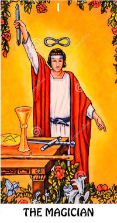
Diferente do Louco, que estava em movimento constante, o Mago está parado, focado e no controle. Ele está posicionado atrás de uma mesa, agindo como um canal entre o mundo espiritual e o mundo material. A figura representa:
O Mago é aquele que sabe exatamente o que quer e tem as ferramentas para fazer acontecer.
O Mago levanta uma mão para o céu (segurando um bastão de duas pontas) e aponta a outra para a terra. Essa é a representação máxima da manifestação. Ele puxa a energia divina (ideias, inspiração) e a canaliza para o mundo físico (realização, matéria). Isso representa:
A mesa à frente do Mago é o seu "campo de trabalho". Ela representa a realidade tangível, o mundo material onde vivemos e onde ele aplicará suas magias e habilidades. É o espaço de ação onde as ideias ganham forma.
Sobre a mesa, repousam os quatro símbolos dos Arcanos Menores, representando os recursos totais que o ser humano possui para criar sua realidade:
O Mago tem todas as ferramentas à sua disposição. Ele não precisa procurar fora; ele já possui tudo o que é necessário para ter sucesso.
Acima da cabeça do Mago flutua o símbolo do infinito. Ele representa o fluxo contínuo de energia, a sabedoria ilimitada e a conexão com a mente universal. Indica que o poder do Mago não é temporário, mas vem de uma fonte eterna e espiritual.
O cinto do Mago é uma cobra mordendo a própria cauda. Esse é um símbolo antigo de eternidade, renovação constante e o ciclo infinito de criação e destruição. Reforça a ideia de que a energia nunca morre, apenas se transforma.
O Mago veste uma túnica branca sob um manto vermelho:
O amarelo brilhante atrás do Mago não é um céu comum, mas a cor do intelecto, da consciência desperta, do otimismo e da iluminação mental. Mostra que a ação do Mago é guiada por clareza e inteligência, não por impulsos cegos.
As flores que adornam a parte superior e inferior da carta reforçam o equilíbrio do Mago:
O Mago representa o poder da criação consciente. Enquanto o Louco é o potencial puro e caótico, o Mago é a energia direcionada e o foco absoluto. Com os quatro elementos à sua disposição, ele nos ensina que a magia verdadeira é a capacidade de usar nossos recursos internos (mente, emoção, corpo e espírito) para transformar nossos desejos em realidade física. A carta diz: "Você tem o poder, as ferramentas e a energia. Agora, aja".
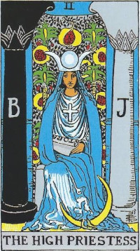
Ao contrário do Mago, que age e manifesta, a Sacerdotisa está sentada, em total quietude. Ela não precisa fazer esforço físico, pois seu poder vem da recepção, da intuição e do silêncio. A figura representa:
Ela é a guardiã dos segredos e nos convida a olhar para dentro antes de tomarmos qualquer decisão exterior.
Ela está sentada entre duas colunas do Templo de Salomão. Uma é preta com a letra "B" (Boaz, que significa força/escuridão) e a outra é branca com a letra "J" (Jachin, que significa estabelecimento/luz). Os pilares representam:
Atrás dela há um véu que esconde o que está além (o mar profundo do inconsciente). Apenas os iniciados ou aqueles que ouvem a própria intuição podem atravessá-lo.
Em seu colo, ela segura um pergaminho onde se lê "TORA" (que pode ser a Torá, lei divina hebraica, ou um anagrama para TAROT). O pergaminho está parcialmente escondido por seu manto.
Isso significa que o conhecimento verdadeiro e espiritual está disponível, mas não é entregue de forma mastigada. Parte dele sempre permanecerá oculta e deverá ser descoberta pela vivência pessoal e pela fé.
A lua aos pés da Sacerdotisa a conecta com os ciclos naturais, com o domínio das emoções, com as marés e com o sagrado feminino. Mostra que ela domina a própria intuição e os humores instáveis.
Na cabeça, ela usa a coroa da deusa egípcia Ísis, que mostra as três fases da lua (crescente, cheia e minguante). Isso reforça sua conexão com os ciclos da vida, a magia natural e o poder duradouro do conhecimento que transcende o tempo.
O manto azul da Sacerdotisa parece derreter e fluir pelo chão como água. A água no tarot é sempre um símbolo das emoções e do subconsciente. Isso sugere que ela mesma é a fonte do mistério e da intuição pura.
A cruz de braços iguais em seu peito representa o equilíbrio perfeito entre os quatro elementos e as quatro direções. Mostra sua ligação tanto com a espiritualidade quanto com a terra.
A Sacerdotisa é o portal para o mundo interior. Enquanto o Mago fala sobre "fazer", ela fala sobre "ser" e "sentir". Sentada no limiar entre a luz e a escuridão, ela nos ensina que as respostas mais verdadeiras não estão no barulho do mundo lá fora, mas no silêncio da nossa intuição. O pergaminho oculto, o véu e as luas mostram que o conhecimento profundo exige paciência, percepção apurada e respeito aos mistérios invisíveis da vida.
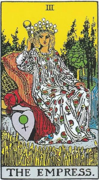
A Imperatriz é a personificação da Mãe Natureza e do arquétipo materno. Ela está reclinada em almofadas luxuosas num cenário aberto e vibrante. A figura representa:
A Imperatriz nos convida a celebrar a vida, aproveitar os prazeres do corpo e nutrir nossos projetos com carinho.
Ela usa uma coroa majestosa com 12 estrelas de seis pontas. Essas estrelas representam os 12 signos do zodíaco e os 12 meses do ano. Isso mostra sua conexão divina com o cosmos e o domínio sobre os ciclos naturais e o tempo cósmico.
Assim como no véu da Sacerdotisa, as romãs estampadas no vestido da Imperatriz simbolizam a fertilidade. O vestido frouxo sugere, muitas vezes, uma gravidez, indicando que algo está crescendo, prestes a nascer (seja um filho, uma ideia genial ou um novo negócio).
Ao lado de seu trono em formato de coração, descansa um escudo de cobre com o símbolo astrológico de Vênus estampado. Vênus é o planeta do amor, da harmonia, da arte e do prazer. O escudo a protege não através de armas, mas através do amor e da beleza.
Aos seus pés brota um campo de trigo dourado, quase pronto para a colheita. O trigo representa:
Ao fundo, uma cachoeira abundante desce pela floresta espessa. A água em movimento simboliza a força vital fluindo livremente, assim como a energia emocional nutritiva. A floresta indica a vida em seu estado mais exuberante, selvagem e receptivo.
Em sua mão direita, a Imperatriz segura um cetro coroado por um globo terrestre. Isso significa que seu poder e sua influência operam primariamente sobre o mundo material. Ela é a rainha da Terra, ditando como a vida cresce e se desenvolve aqui no plano físico.
O conforto de seu assento indica a capacidade de desfrutar das recompensas físicas. Ela não sofre nem se sacrifica; ela sabe receber e se deleitar com os confortos materiais, ensinando o valor do autocuidado e do bem-estar.
A Imperatriz é o abraço caloroso do universo. Se a Sacerdotisa era o silêncio misterioso do inconsciente, a Imperatriz é a expressão ruidosa, viva e colorida da vida material. Ela cria, nutre e faz crescer. Os símbolos de Vênus, trigo, água e estrelas reforçam que a fertilidade não é apenas sobre ter filhos, mas sobre gerar ideias ricas, cuidar de si mesmo e viver a vida com os cinco sentidos aguçados e o coração transbordando amor e conforto material.
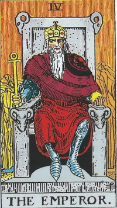
O Imperador é a figura do pai, do líder e da autoridade. Ele é um homem mais velho, de barba branca (simbolizando sabedoria e experiência adquirida), sentado num trono rígido. A figura representa:
Ele é quem organiza o caos do mundo natural da Imperatriz, transformando uma selva indomável em uma cidade funcional com leis e fundações sólidas.
O trono não é confortável como o da Imperatriz. É feito de pedra dura e fria, simbolizando estabilidade inflexível. Nos braços e encosto do trono, há cabeças de carneiro, o símbolo do signo de Áries. O carneiro representa:
Diferente da maioria dos arcanos, o Imperador veste uma armadura de metal sob sua túnica. Isso demonstra que, mesmo em tempos de paz, ele está sempre vigilante e pronto para lutar para proteger seu império ou defender suas convicções. Representa disciplina militar e defesas emocionais altas.
Nas mãos, ele carrega símbolos de extremo poder:
O vermelho vibrante de suas vestes reforça a energia de Áries e do planeta Marte: vitalidade, paixão, força de vontade, coragem e o instinto da conquista e da ação ininterrupta.
Atrás do trono, vemos montanhas secas, duras e estéreis. Ao contrário do cenário verde e abundante da Imperatriz, as montanhas do Imperador revelam sua natureza prática e severa. Elas mostram que sua fundação é baseada em rocha firme, impenetrável e que ele opera no mundo da lógica sólida, onde as ilusões e fantasias não têm vez.
No fundo, por trás das montanhas, corre um fio muito fino de água. A água (emoção), embora presente, é mínima e controlada. O Imperador não permite que seus sentimentos guiem suas decisões; a lógica e a necessidade do império vêm sempre em primeiro lugar.
A coroa em sua cabeça é pesada e fechada. Demonstra não apenas sua autoridade terrestre inquestionável, mas também o peso da responsabilidade no topo da hierarquia. A coroa de ouro brilha com o poder racional da mente.
O Imperador é o alicerce sólido da sociedade e da mente. Com seu trono de pedra ornado com carneiros, ele mostra que o sucesso contínuo exige estrutura, disciplina, regras claras e força de vontade férrea. A armadura sob as roupas vermelhas revela um homem pronto para o combate, focado na praticidade das montanhas áridas do raciocínio em vez do conforto emocional (água escassa). Ele ensina que para algo durar e ser respeitado, é necessário estabelecer limites fortes e agir com autoridade racional e maturidade.
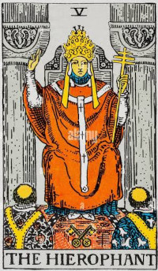
Enquanto o Imperador governa o mundo físico e as leis dos homens, o Hierofante é a autoridade máxima do mundo espiritual e das tradições. Ele está sentado em um ambiente fechado, semelhante a uma igreja ou templo. A figura representa:
A palavra "Hierofante" vem do grego antigo e significa "aquele que revela o sagrado". Ele é o professor ou líder que repassa o conhecimento herdado.
Aos pés do Hierofante, de costas para nós, estão dois sacerdotes. Eles representam os alunos, o rebanho ou os seguidores aprendendo a tradição. A roupa de um é decorada com rosas vermelhas (desejo, ação) e a do outro com lírios brancos (pureza, pensamento). O Hierofante ensina como equilibrar essas duas forças dentro da doutrina.
A mão direita do Hierofante está levantada com dois dedos esticados e dois dobrados. Esse é um antigo símbolo cristão de bênção, mas esotericamente representa a distinção entre o que é visível (o ensinamento exotérico, para todos) e o que está oculto (o ensinamento esotérico, apenas para os iniciados).
Na mão esquerda, ele segura um cetro dourado com três barras horizontais (a cruz papal). Ela simboliza seu domínio religioso sobre os três mundos: o subconsciente, o consciente e o superconsciente (ou céu, terra e inferno na visão tradicional). Mostra que ele é o canalizador que liga esses planos.
Assim como o cetro, sua coroa possui três camadas. Isso reforça a trindade e sua autoridade absoluta sobre o corpo, a mente e o espírito. No topo da coroa há um "W", que muitos associam à palavra "Wisdom" (sabedoria em inglês) ou a uma assinatura sutil de Waite.
Aos seus pés repousam duas chaves de ouro e prata cruzadas. Elas são as "chaves do reino dos céus". A chave de ouro representa a luz do sol (razão e consciência), e a chave de prata representa a lua (intuição e subconsciente). Cruzadas, indicam que o Hierofante detém o segredo para destravar a união perfeita entre a mente humana e o divino.
Diferente das colunas preta e branca da Sacerdotisa (que indicavam os extremos da dualidade selvagem), as colunas do Hierofante são sólidas e de pedra cinza. Isso mostra que as instituições e as tradições são estruturadas, neutras e muitas vezes inflexíveis. Não há mistério oculto por véus aqui, mas sim a solidez da religião organizada ou do conhecimento acadêmico.
O Hierofante é a voz da tradição e das regras em sociedade. Ele oferece um caminho espiritual já testado e aprovado, convidando-nos a aprender com os mais experientes. As chaves cruzadas, a cruz tripla e os alunos devotos indicam que a educação formal, o respeito às cerimônias (como casamentos ou formaturas) e a busca por um conselheiro sábio são os melhores caminhos no momento. Ele nos lembra que pertencer a uma comunidade com valores compartilhados traz segurança, mas também exige obediência aos costumes vigentes.
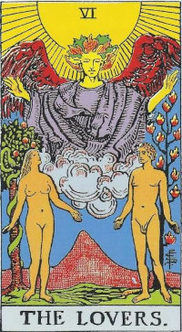
No centro da carta, vemos um homem e uma mulher totalmente nus em um jardim exuberante, representando Adão e Eva no Jardim do Éden. A nudez deles não tem conotação de vergonha; pelo contrário, a figura representa:
Acima do casal flutua um anjo gigante de asas púrpuras e cabelos de fogo, abençoando a união. Este é o Arcanjo Rafael, o anjo do elemento Ar e da cura. Ele representa a comunicação, a clareza mental e a bênção divina sobre o relacionamento humano. É o "superconsciente" que une as almas terrenas.
Atrás do anjo, um sol imenso e radiante derrama luz sobre o casal. Diferente da carta do Mago (onde o fundo era apenas amarelo), aqui o próprio Sol é uma entidade visível, simbolizando iluminação, alegria, prosperidade e a energia divina pura que aquece e abençoa escolhas feitas com integridade.
Atrás de Adão, cresce a Árvore da Vida, que possui doze chamas no lugar de folhas, representando os 12 signos do zodíaco e a paixão ardente do elemento Fogo. Ela simboliza a força vital masculina, a lógica, o desejo e a força de vontade direcionada.
Atrás de Eva está uma macieira com uma serpente enrolada em seu tronco. Essa é a árvore do mito do Éden, que trouxe a consciência e a mortalidade à humanidade. A serpente simboliza a sabedoria terrena, a sedução, o inconsciente e o despertar dos sentidos. Representa a tentação, mas também o livre-arbítrio (a capacidade de fazer escolhas).
Um detalhe fundamental dessa carta: O homem (consciência e intelecto) olha para a mulher; a mulher (subconsciente e emoção) olha para o anjo (o divino/superconsciente).
Isso é uma lição hermética profunda: a mente lógica (homem) não consegue acessar o divino diretamente. O intelecto precisa olhar para a intuição/emoção (mulher), que por sua vez tem a capacidade de olhar e se conectar com o espírito elevado (anjo). A verdadeira sabedoria espiritual surge do alinhamento entre essas três instâncias.
No horizonte, entre o casal, ergue-se uma grande montanha vulcânica (muitas vezes associada a um símbolo fálico e à paixão consumada). Ela mostra que relacionamentos reais e grandes escolhas envolvem desafios. O amor e as parcerias exigem esforço para serem escalados e mantidos; não são apenas a facilidade de um jardim paradisíaco.
A carta dos Enamorados fala muito além do romance. Adão, Eva e o Anjo formam um triângulo perfeito de conexão mútua. A nudez pede que sejamos vulneráveis e verdadeiros. As duas árvores e o mito do Éden nos lembram que a vida adulta é feita de grandes "encruzilhadas". Assim, a carta nos ensina que o amor verdadeiro, seja por outra pessoa ou por uma decisão de vida, exige que sejamos íntegros, que unamos a lógica (homem) à intuição (mulher) e que façamos nossas escolhas sob a luz da nossa moral mais elevada (anjo).
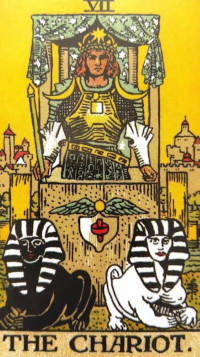
Um jovem guerreiro orgulhoso está de pé em uma carruagem impressionante. Ele não está relaxado, mas alerta, focado e no comando. A figura representa:
Se você olhar bem, o guerreiro não segura rédeas. Ele conduz o carro apenas segurando um pequeno bastão (semelhante ao do Mago) na mão direita e usando o poder da sua própria mente. Isso indica que a verdadeira vitória não vem da força bruta ou de acorrentar o que está ao seu redor, mas sim de uma força de vontade, clareza mental e propósito inabaláveis.
Em vez de cavalos, o carro é puxado por duas esfinges mitológicas. Uma é preta, a outra é branca (simbolizando as dualidades: lógica/emoção, bem/mal, instintos/racionalidade). Elas parecem querer puxar em direções opostas (ou até sentar e não fazer nada). O guerreiro precisa da sua força de vontade para alinhar essas forças conflitantes, forçando-as a andar juntas na mesma direção para que a carruagem avance.
A carruagem tem uma cobertura de tecido azul escuro estampada com estrelas brancas de seis pontas. Isso demonstra que o herói está conectado com o cosmos. Sua jornada, por mais material e difícil que seja, é abençoada e guiada por forças celestiais superiores.
O guerreiro veste uma armadura que indica proteção e preparação para a batalha. No centro de seu peito há um quadrado dourado, o símbolo do elemento Terra, da estabilidade material e da ordem. Ele age de forma estruturada, com os pés "no chão", focado na realidade.
Em seus ombros descansam duas luas crescentes, voltadas para fora. Elas representam a intuição e as emoções em constante mudança (Urim e Tumim, na tradição esotérica). O guerreiro demonstra que não é cego aos seus sentimentos, mas que ele as carrega em seus ombros (controla-as) em vez de deixar que elas o controlem.
Na frente do carro há um símbolo egípcio de um disco alado com uma peça vermelha encaixada nele (referência ao Lingam-Yoni hindu, a união das energias masculina e feminina). Isso significa que a alma humana voa mais alto quando consegue integrar e harmonizar as suas energias opostas.
Atrás do guerreiro vemos um rio e uma cidade com muralhas e castelos fortificados. Isso mostra que ele está deixando para trás a zona de conforto (o reinado do Imperador) e aventurando-se no mundo. Ele conquistou algo no passado e agora avança resoluto em direção a novas vitórias.
O Carro é a carta do triunfo obtido através do esforço árduo. É o momento em que saímos da teoria e vamos para o campo de batalha da vida. As esfinges teimosas representam as nossas próprias dúvidas, desejos conflitantes ou os obstáculos que o mundo coloca em nosso caminho. O guerreiro triunfante não usa violência; ele usa o foco mental a laser. A carta nos ensina que o sucesso é garantido se mantivermos as rédeas invisíveis das nossas emoções e pensamentos firmes em direção ao nosso propósito, não importando a oposição.
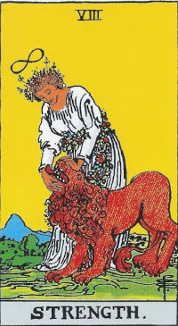
A imagem central mostra uma mulher de aparência serena acariciando e fechando suavemente a boca de um leão feroz. Ela não demonstra medo, e o leão parece domado pelo toque dela. A figura representa:
A carta nos ensina que a verdadeira força não é a brutalidade física, mas a capacidade de manter a calma e dominar nossos próprios medos e impulsos destrutivos.
Assim como no arcano do Mago, a mulher possui o símbolo do infinito flutuando sobre sua cabeça. Isso indica que a força que ela exerce não vem dos músculos, mas de uma conexão espiritual eterna, da sabedoria superior e da mente focada. Sua força é inesgotável porque é divina.
Ela veste uma túnica branca, símbolo máximo de pureza de espírito e intenções inocentes. Em volta da cintura e na cabeça, ela usa guirlandas de flores, o que a conecta com a natureza e demonstra que sua abordagem é suave, amorosa e bela, não rígida ou opressora.
O leão é o rei dos animais e representa o fogo, a paixão desenfreada, os instintos animais, a raiva, a luxúria e a coragem crua. Ele simboliza a "besta interior" que todos nós carregamos. A mulher não mata o leão nem o prende em uma jaula; ela o integra e o acalma. Isso mostra que não devemos reprimir nossos desejos ou nossa raiva, mas sim canalizá-los e domá-los com sabedoria.
O céu é amarelo brilhante, indicando consciência desperta, otimismo e intelecto ativo (assim como no Mago e nos Enamorados). Ao fundo, uma montanha azul e uma paisagem gramada verde trazem uma sensação de paz, estabilidade e harmonia com o ambiente natural.
A Força é a carta da maestria emocional. Ela mostra que bater de frente ou usar a agressividade (a força do ego) muitas vezes falha, enquanto a gentileza, a compaixão e a resistência silenciosa (a força da alma) conseguem domar até as feras mais selvagens. O leão representa nossos desafios internos (como o vício, a raiva ou o medo). A mulher coroada de flores nos ensina que só conseguimos vencer essas feras quando as tratamos com aceitação e amor incondicional, usando nosso poder espiritual (o infinito) para guiar nossos instintos.

Um homem idoso, de barba longa e grisalha, caminha sozinho no topo de uma montanha nevada. Diferente das cartas anteriores, que envolviam a sociedade ou parceiros, o Eremita está em isolamento total. A figura representa:
Ele se afastou do barulho da multidão para conseguir ouvir a voz da própria alma.
Em sua mão direita (a mão da consciência), ele ergue uma lanterna que brilha na escuridão. Dentro da lanterna não há uma vela comum, mas uma estrela de seis pontas (o Selo de Salomão). Ela representa a sabedoria divina e a união entre o céu e a terra.
A lanterna ilumina apenas os passos imediatamente à sua frente. O Eremita nos ensina que não precisamos ver o caminho inteiro para avançar, basta ter luz suficiente para dar o próximo passo com segurança.
Na mão esquerda, ele se apoia em um cajado longo de madeira. O cajado representa seu poder e sua autoridade conquistados não por força física, mas por anos de experiência. É o apoio da tradição, da fé e do conhecimento prático que o ajuda a navegar pelos terrenos difíceis do subconsciente e da solidão.
O Eremita está totalmente coberto por um manto cinza, uma cor neutra, que não chama atenção. O manto simboliza sua invisibilidade para as questões mundanas e fúteis, além de proteger sua essência (o mundo interno) do frio (as opiniões e demandas do mundo externo). É o fechamento dos sentidos para o exterior para abrir os olhos do interior.
A montanha coberta de neve e gelo representa o ponto mais alto do desenvolvimento espiritual. O gelo indica que este é um lugar de pureza e clareza absoluta, mas também um local solitário, frio e difícil de ser alcançado. Poucos têm a coragem e a disciplina para escalar a montanha da autodescoberta.
O Eremita está no topo do mundo, mas não olha orgulhoso para cima. Sua cabeça está inclinada para baixo. Isso demonstra humildade profunda e também sugere que ele está iluminando o caminho para aqueles que ainda estão escalando a montanha lá embaixo. Ele é o mestre que, após atingir a iluminação, ajuda a guiar os outros.
O Eremita é o chamado para desligar as telas, silenciar o ruído externo e olhar para dentro. Quando estamos confusos, a sociedade não pode nos dar as respostas. Precisamos do retiro voluntário. Apoiado em sua própria experiência (o cajado) e guiado pela luz da sua verdade interior (a lanterna), ele caminha com lentidão e cautela. A carta ensina o valor do silêncio, da meditação e da humildade, lembrando-nos de que a maior de todas as sabedorias é aquela que descobrimos sozinhos no topo da montanha da nossa própria mente.
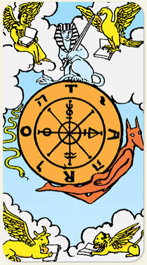
Diferente de quase todos os arcanos maiores, não há figura humana nesta carta. O centro é dominado por uma grande roda de bronze girando no céu. A roda representa:
No aro externo da roda há um enigma composto de letras:
Nos quatro cantos da carta, sobre nuvens, há quatro figuras aladas lendo livros dourados (registrando a sabedoria e as leis universais). Eles representam os quatro signos fixos do zodíaco e os quatro evangelistas cristãos:
Eles representam a estabilidade divina em contraste com a roda mundana que gira sem parar.
Sentada impassível no topo da roda está uma esfinge azul segurando uma espada. A esfinge é o símbolo da sabedoria, do equilíbrio e dos mistérios da vida. Ela se mantém no topo (o ponto de equilíbrio ideal) e sua espada indica discernimento mental para não ser derrubado pela roda giratória.
No lado direito da roda, subindo, há uma figura avermelhada com cabeça de chacal. É o deus egípcio Hermanúbis (fusão de Hermes com Anúbis). Ele simboliza a inteligência, a evolução da consciência em direção à luz e os momentos da vida em que estamos "por cima" e progredindo.
No lado esquerdo, descendo, está uma serpente amarela monstruosa. É Tifão, deus grego do caos e da destruição (ou Seth egípcio). Simboliza a ignorância, a força cega do caos, o declínio e as fases da vida em que perdemos controle, falhamos ou a "sorte vira" contra nós.
No núcleo da roda, estão quatro símbolos alquímicos: sal, enxofre, mercúrio e água (os pilares da matéria física). O centro, chamado de eixo, é o único ponto da roda que não se move quando ela gira. Isso guarda o segredo esotérico da carta.
A Roda da Fortuna é um lembrete profundo sobre a impermanência. O universo está em constante rotação. Às vezes estamos subindo (Anúbis) e desfrutando o sucesso; às vezes estamos descendo (Tifão) e enfrentando crises. A carta nos ensina que apegar-se aos extremos é pedir para sofrer (pois inevitavelmente o topo vira fundo, e o fundo vira topo). O segredo para navegar pelo destino, representado pela Esfinge e pelos símbolos no centro, é manter a mente calma no "eixo central" da nossa própria existência. Ao encontrarmos o nosso centro espiritual, não ficamos zonzos com as voltas que o mundo dá.
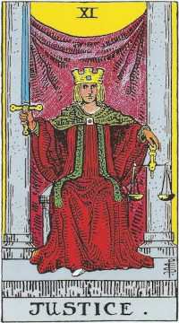
Uma figura imponente, geralmente vista como andrógina (misturando traços masculinos e femininos), está sentada num trono rígido, olhando diretamente para nós. Diferente da Sacerdotisa, que guardava mistérios, a Justiça exige transparência total. A figura representa:
Na mão direita (a mão da ação), ela segura uma espada apontada para cima. A espada pertence ao naipe mental do elemento Ar. Os dois gumes mostram que a espada corta para os dois lados: a justiça e as consequências se aplicam a todos de forma igualitária. A posição reta da espada indica uma mente clara, lógica, direta e pronta para "cortar" qualquer mentira ou ambiguidade.
Na mão esquerda (a mão receptiva e intuitiva), ela segura uma balança dourada. Isso mostra que, antes de a espada agir e punir ou decidir, todos os fatos, as emoções e os lados da história devem ser pesados. A intuição ajuda a medir o peso das ações, garantindo que o veredito seja realmente equilibrado.
Na sua coroa dourada, brilha uma joia em formato de quadrado. O quadrado é o símbolo da terra, da estabilidade, da ordem e das regras estruturadas (assim como víamos no peito do Carro e no trono do Imperador). Os pensamentos da Justiça são metodicamente organizados; ela não se deixa levar por caprichos ou paixões momentâneas.
Se você olhar atentamente para a base do vestido, verá a ponta de um sapato branco espreitando por baixo do manto vermelho. O branco é o símbolo da pureza. Isso é um detalhe sutil que diz: "Minhas ações e sentenças (o manto vermelho) podem parecer duras, mas o meu fundamento e as minhas intenções (o sapato) são puras e espirituais".
Assim como o Hierofante e a Sacerdotisa, ela está sentada entre duas colunas, mas aqui o véu ao fundo é roxo/púrpura, a cor da realeza, do mistério e do poder superior. Diferente da Sacerdotisa, as colunas da Justiça são iguais. Não representam extremos selvagens de luz e sombra, mas as leis estruturadas da sociedade que protegem o que é sagrado.
A Justiça é a carta que afirma que nós colhemos o que plantamos. Ela nos encara de frente e nos convida a sermos brutalmente honestos conosco mesmos. A balança pesa as nossas ações e a espada corta fora a negação. Ela diz que o universo sempre busca o equilíbrio e que o caminho correto no momento não é agir por emoção, mas fazer a escolha que é racionalmente justa, ética e transparente, assumindo as responsabilidades por cada passo dado.
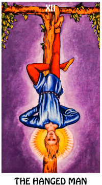
Um jovem está amarrado pelo tornozelo direito a uma árvore com formato de "T", pendurado de cabeça para baixo. Apesar da situação aparentemente assustadora, a figura representa:
O detalhe mais importante da carta é o rosto do homem: ele não expressa dor, medo ou sofrimento. Pelo contrário, está calmo, quase em estado de transe ou meditação profunda. Ele não foi pendurado ali à força; foi uma escolha de submissão temporária para aprender algo valioso.
Em volta da sua cabeça brilha uma forte luz amarela, uma auréola típica de santos e iluminados. Isso reforça que, ao aceitar a sua suspensão e parar de lutar contra a corda, ele alcançou uma epifania, um insight brilhante ou o despertar espiritual.
A postura do Enforcado não é aleatória; ela forma símbolos esotéricos:
A madeira onde ele está pendurado forma um "T" (a cruz de Tau). Note que não é uma forca de madeira morta; as pontas da árvore possuem folhas verdes brotando. Isso indica que a situação de "sacrifício" e espera não é o fim da linha. O momento é de inércia, mas há energia e vida crescendo silenciosamente, apenas esperando a hora de brotar.
Sua camisa é azul clara (a cor do intelecto tranquilo, da água e do subconsciente fluído) e suas calças são vermelhas (a paixão, o fogo e a ação física). O fato de o azul estar "embaixo" e o vermelho "em cima" (por ele estar invertido) mostra mais uma vez a inversão de prioridades: o agir físico agora está contido, enquanto a intuição e a mente calma comandam.
O Enforcado quebra o frenesi do mundo. A vida exige que corramos o tempo todo (como O Carro), mas esta carta grita: "Pare!". Quando nos debatemos em uma situação presa, a corda só aperta mais. O Enforcado nos ensina a arte da rendição e da aceitação. Ele escolhe olhar a vida por um ângulo diferente e descobre que abdicar do controle pode trazer a iluminação. É a pausa necessária e produtiva antes de uma grande transição.
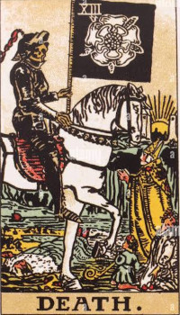
Um esqueleto trajando uma armadura negra cavalga imponente sobre um cavalo branco. A primeira coisa a saber é que esta carta quase nunca fala sobre a morte física literal. A figura representa:
A armadura negra significa que a Morte é impenetrável e implacável; você não pode argumentar com a mudança que o universo decidiu que deve acontecer.
O cavalo que a morte cavalga é imaculadamente branco, de olhos vermelhos fogosos, caminhando sem pressa, mas sem pausa. O cavalo branco é tradicionalmente um símbolo de pureza, da luz divina e de novos começos. Isso mostra que a energia por trás do fim de um ciclo não é maligna, mas sim uma força pura, natural e até libertadora.
A Morte carrega um grande estandarte negro. O preto simboliza a escuridão onde a semente apodrece para germinar. Estampada na bandeira, vemos uma rosa branca com cinco pétalas. A "Rosa Mística" é o símbolo do princípio vital universal, da pureza, da beleza e do renascimento garantido. A Morte carrega a própria promessa de uma nova vida.
Embaixo do cavalo, vemos quatro reações clássicas dos seres humanos diante do fim e das grandes perdas:
Lá no fundo da imagem, atrás do cenário fúnebre, não é o pôr do sol, mas um belo e brilhante nascer do sol entre as duas torres (o portal da eternidade). Esse detalhe é essencial: para todo "escurecer", há a garantia absoluta do amanhecer. A luz da imortalidade divina nos aguarda após a travessia das sombras.
A água do rio flui rumo ao mar. Um pequeno barco navega por ela, uma referência mitológica ao Rio Estige (onde as almas eram guiadas para o outro lado). Simboliza a transição da consciência entre dois estados de existência.
Após a pausa do Enforcado, a Morte varre com a vassoura cósmica tudo o que estava obsoleto, estagnado ou adoecido em nossa vida. Relacionamentos que não funcionam mais, crenças limitantes, empregos sufocantes: a Morte vem como um poda radical na árvore. A princípio, dói ver nossas defesas (o rei) no chão, mas o cavalo puro e o sol nascendo ao fundo garantem que o terreno está sendo limpo para que a nova vida (a rosa branca) possa enfim florescer.

Um anjo imponente e andrógino (com asas vermelhas radiantes) domina o centro da carta. É frequentemente associado ao Arcanjo Miguel ou Gabriel. Diferente da Morte implacável, este anjo transmite paz e cura. A figura representa:
O anjo derrama um líquido continuamente entre duas taças, da mão direita (consciente/ação) para a mão esquerda (subconsciente/intuição). O líquido não cai em linha reta, mas flui de forma mágica, em diagonal. Isso representa a habilidade de unir dualidades (fogo e água, mente e emoção) na medida exata, sem derramar uma gota. É a verdadeira arte da temperança: encontrar a "temperatura" ideal das coisas.
Na túnica branca do anjo, vemos um quadrado com um triângulo dourado dentro. O quadrado simboliza a matéria e a lei física; o triângulo voltado para cima simboliza o espírito, o divino e o fogo. Juntos, indicam que o espírito sagrado está contido e trabalhando em harmonia dentro do corpo material.
O anjo tem o pé direito mergulhado na água (as emoções, o fluxo do inconsciente) e o pé esquerdo firmemente plantado na terra (o mundo físico, a estabilidade, a lógica). Isso mostra que ele está perfeitamente aterrado na realidade, ao mesmo tempo em que está em profundo contato com seus sentimentos. O equilíbrio perfeito.
No meio da testa do anjo há um pequeno símbolo circular dourado brilhando (frequentemente associado ao Sol). Ele representa a iluminação intelectual, o terceiro olho aberto e a clareza de pensamento guiando as ações alquímicas.
Na beira do lago, crescem lírios amarelos conhecidos como íris. Na mitologia grega, Íris é a deusa do arco-íris, a mensageira que faz a ponte entre o Olimpo (céu) e a humanidade (terra). Reforça o papel do anjo como um pacificador que conecta o mundo espiritual e o humano.
No fundo da carta, um caminho longo e sinuoso sobe as montanhas até um sol nascente na forma de uma coroa luminosa. Ele indica o objetivo final da jornada do Louco: a coroação espiritual. O anjo mostra que a moderação e a cura interior são o caminho certo para alcançar essa luz superior.
Após a destruição causada pela Morte, a Temperança é o bálsamo curativo. Ela ensina que, para curar e evoluir, não podemos agir de forma reativa ou apressada. É preciso ter paciência, "testar as águas" e misturar nossos recursos com sabedoria. O anjo que derrama a água de forma impossível nos diz que, com calma e moderação, podemos harmonizar os aspectos mais difíceis da nossa vida, encontrando o "caminho do meio" que nos levará à iluminação.
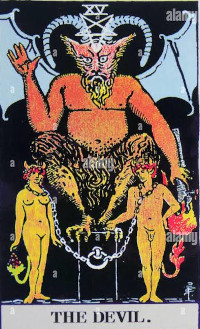
A imagem central é uma criatura animalesca, parte homem, parte bode, com asas de morcego, baseada na figura ocultista de Baphomet e no deus grego Pã (senhor da natureza selvagem e do pânico). Esta carta não representa o mal absoluto, mas sim nossos aspectos mais instintivos e limitantes. A figura representa:
Na testa da criatura brilha um pentagrama de cabeça para baixo. O pentagrama normal (uma ponta para cima) representa o espírito dominando os quatro elementos materiais. Invertido (duas pontas para cima), ele significa a matéria e os desejos do corpo reinando sobre o intelecto e o espírito humano.
Ao contrário das cartas iluminadas pelos sóis brilhantes, O Diabo opera em total escuridão. O preto simboliza a ignorância, a depressão, o medo e a ausência da luz da consciência. O Diabo viceja quando nos recusamos a olhar a verdade de frente.
O Diabo está empoleirado sobre metade de um cubo de pedra negra. O cubo é o símbolo da realidade física e da matéria sólida. Sendo apenas "metade" de um cubo, indica uma visão distorcida do mundo: as pessoas aprisionadas pelo Diabo só conseguem enxergar as necessidades físicas imediatas, ignorando o lado espiritual da existência.
No pedestal estão acorrentados um homem e uma mulher nus (os mesmos da carta Os Enamorados, mas agora decaídos). Eles sucumbiram aos seus desejos desenfreados. Porém, o detalhe crucial é: as correntes em seus pescoços estão frouxas. Eles poderiam levantá-las e se libertar a qualquer momento, mas a ignorância, o vício ou o conformismo os fazem acreditar que estão presos para sempre.
O casal adquiriu chifres e caudas, mostrando que estão se transformando lentamente na própria "besta" ao se renderem à sua natureza inferior.
O Diabo é o grande mestre da ilusão. Ele nos faz acreditar que precisamos desesperadamente de algo fora de nós (dinheiro, uma pessoa específica, substâncias, aprovação) para sermos felizes. O pedestal em que ele senta não é infinito, e as correntes são frouxas. A carta revela que nossas amarras e prisões (nossos vícios, medos e obsessões) são criadas por nós mesmos. Para escapar da escuridão do Diabo, basta rir de suas ilusões e ter a vontade consciente de tirar a própria corrente do pescoço.
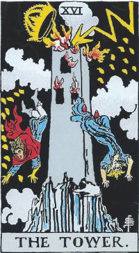
Uma torre alta e imponente de pedra, construída sobre um penhasco irregular, é violentamente atingida por um relâmpago, explodindo em chamas de cima a baixo. A figura representa:
A Torre foi construída pelo ego humano, tentando chegar aos céus com uma base falsa (semelhante ao mito da Torre de Babel).
O raio não surge do nada; ele vem das nuvens escuras superiores. Ele simboliza a intervenção divina, um "flash" de intuição repentina, uma epifania violenta ou a verdade nua e crua que quebra todas as mentiras. O universo intervém porque a estrutura construída era insustentável, baseada em premissas falsas.
Em vez de um telhado, a torre ostentava uma grande coroa dourada, que agora é nocauteada pelo raio. A coroa simboliza o orgulho intelectual, o falso poder, as crenças arraigadas e a arrogância de pensar que somos invulneráveis. O raio divino expulsa a mente do topo de seu falso trono.
Duas pessoas despencam da torre de cabeça para baixo:
Cair de cabeça para baixo indica que suas perspectivas mundanas foram completamente viradas do avesso. A verdade atinge a todos igualmente, não importa seu status ou sua riqueza prévia.
As chamas irrompem não apenas de cima, mas também pelas janelas, mostrando que a combustão também estava acontecendo do lado de dentro. As emoções, verdades e pressões que foram represadas nas paredes fechadas da torre finalmente explodem de forma espetacular. O fogo aqui é um purificador.
Ao redor da torre, caindo do céu, há 22 gotas de fogo em forma de chamas douradas (10 de um lado, 12 do outro). Elas têm o formato da letra hebraica Yod, que representa a fagulha divina ou o "dedo de Deus". O número 22 refere-se aos 22 Arcanos Maiores ou às letras do alfabeto hebraico.
Este detalhe é vital: mesmo no meio do caos, do medo e da destruição total da vida como conhecíamos, a graça e a luz divinas (os Yods) estão presentes. O universo nos protege em essência, mesmo quando destrói nosso conforto.
A Torre é a carta do choque inevitável. Muitas vezes, nós mesmos construímos "Torres" – empregos que odiamos, relações falsas, ideologias extremas – e nos trancamos lá dentro por segurança. A vida intercede. A queda dói e o raio assusta, mas esta carta é, no fundo, uma benção terrível. A Torre é a explosão da prisão que o Diabo tentou manter no arcano anterior. A estrutura cai, o ego desmorona, mas a verdade nos liberta para construirmos algo real no solo agora desimpedido.
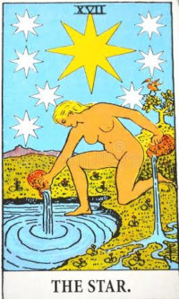
Uma mulher jovem e completamente nua está ajoelhada na beira de um lago cristalino, com um pé na água e outro na terra. Ela não carrega armadura ou pesos; sua nudez absoluta mostra aceitação, pureza e vulnerabilidade sem medo. A figura representa:
Nas mãos, ela segura dois vasos (ânforas):
Esse fluxo contínuo e equilibrado mostra que ela é um canal de energia divina que nutre tanto o espírito quanto a matéria.
No céu noturno brilha uma estrela principal dourada e gigante, rodeada por outras sete estrelas menores (completando oito estrelas no total). O número 8 na numerologia e esoterismo representa o infinito, o equilíbrio cósmico e a regeneração. A estrela maior é a Estrela da Manhã (Vênus ou Sírio), guiando os marinheiros perdidos de volta para casa. Ela simboliza a luz da esperança que nunca se apaga, mesmo na escuridão.
Ao fundo, empoleirado em uma árvore verde, vê-se um pássaro preto (um íbis, associado ao deus egípcio Thoth, da sabedoria e da magia). Ele lembra que, mesmo com toda a suavidade da carta, a sabedoria oculta e a mente vigilante continuam presentes.
Assim como a Temperança, a Estrela mantém um pé submerso nas águas das emoções e o outro firme na terra. Isso demonstra que a esperança e a inspiração não são apenas fantasias de sonho; elas estão bem aterradas na realidade prática.
A Estrela é a calmaria após a tormenta. Quando a Torre desaba e tudo parece perdido, a Estrela surge no céu escuro para nos lembrar que a esperança é eterna. Ela cura as feridas do ego, limpa o ar e nos reconecta com o nosso propósito mais puro. É a carta dos desejos atendidos, da fé inabalável e da certeza de que dias melhores e cheios de luz estão logo ali na frente.
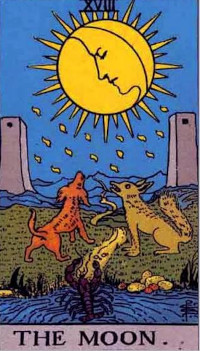
A cena se passa à noite, iluminada por uma lua minguante/crescente que possui um rosto humano voltado para dentro, concentrado e pensativo. A imagem é misteriosa, quase onírica. A figura representa:
No horizonte, nos extremos da imagem, erguem-se duas torres de pedra idênticas (semelhantes aos pilares da Sacerdotisa). Elas representam os portões do desconhecido ou os limites entre o mundo consciente e o inconsciente. A estrada sinuosa passa exatamente por entre elas, indicando que, para avançar, precisamos atravessar esse território nebuloso e assustador.
Em primeiro plano, na base da estrada, dois animais uivam para a lua:
Ambos uivam para a lua, mostrando que, diante do mistério e da ilusão, tanto o nosso lado civilizado quanto o nosso lado primitivo sentem medo e ansiedade.
Saindo de um pequeno charco de água no canto inferior, um lagostim rasteja em direção à estrada. No simbolismo do Tarot, o lagostim representa os pensamentos mais profundos, primitivos e enterrados do subconsciente que estão começando a emergir para a superfície da mente consciente. Ele simboliza as fobias, os traumas antigos ou os impulsos que ainda não compreendemos totalmente.
Caindo do céu, há várias gotas de orvalho em forma de lágrimas (com o formato da letra hebraica Yod). Elas representam a energia divina chorando ou destilando mistérios sobre a terra. Na Lua, essas gotas refletem a melancolia, a sensibilidade excessiva e o choro purificador das emoções represadas.
A Lua é a carta do labirinto psicológico. Na escuridão da noite, as sombras projetadas pelas coisas parecem monstros piores do que realmente são. Esta carta avisa: "Cuidado com as ilusões, com a paranoia e com os medos que você cria na sua própria mente". No entanto, ela também é a mestra do mundo onírico e da intuição. Para atravessar a Lua, é preciso aceitar que nem tudo está claro no momento e aprender a caminhar na neblina sem deixar o medo nos paralisar.
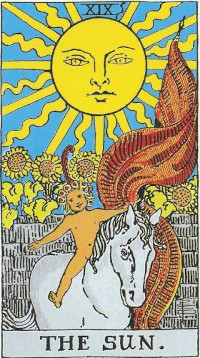
Uma criança alegre, totalmente nua e com uma coroa de flores na cabeça, cavalga livremente em cima de um cavalo branco dócil, sem sela e sem rédeas. Ao fundo, quatro girassóis altos florescem sobre um muro de pedra. A figura representa:
O Sol é uma das cartas mais auspiciosas e positivas de todo o baralho do Tarot.
No alto da carta, um sol dourado massivo irradia luz e calor sobre a cena. Seus raios alternam entre formatos retos (que representam a energia ativa, lógica e penetrante) e ondulados (que representam a energia fluida, emocional e calorosa). Não há sombras na carta do Sol; tudo está perfeitamente iluminado e revelado.
A nudez da criança não é de vulnerabilidade ferida (como no Diabo ou na Estrela), mas de **liberdade inocente**. Ela não tem segredos, armaduras ou vergonha. Representa o nosso "eu verdadeiro", a nossa criança interior curada, que reencontrou a capacidade de brincar e sorrir sem preocupações com o julgamento alheio.
O cavalo branco dócil que carrega a criança é o mesmo cavalo da carta da Morte, mas completamente transformado. O que antes era uma força implacável e aterrorizante de transição agora se tornou manso, companheiro e aliado. A energia indomável do mundo foi integrada e domesticada pela pura alegria de viver.
Na mão esquerda, a criança segura uma bandeira vermelha vibrante com uma flâmula branca. O vermelho é a cor da ação, da paixão e da vitalidade física. A bandeira simboliza o triunfo completo sobre os medos da Lua e as ilusões passadas.
Atrás do muro de pedra, crescem quatro girassóis altos e vistosos, com as cabeças voltadas diretamente para o sol. Os girassóis representam a busca constante pela luz, o crescimento saudável, a fertilidade e a energia solar absorvida e convertida em beleza e vida.
Depois de passar pelas sombras e pelos monstros da Lua, o Sol explode em luz plena. É o triunfo da verdade, da clareza e da felicidade genuína. As sombras somem porque tudo foi revelado às claras. A carta nos ensina que, quando abandonamos os medos e nos permitimos viver com a inocência e o entusiasmo de uma criança, o sucesso, a vitalidade e a paz nos abraçam calorosamente. É a garantia de que o dia claro venceu a noite mais escura.

No alto do céu, soprando uma imensa trombeta dourada, está o Arcanjo Gabriel. O som do instrumento ecoa pelo universo, exigindo atenção absoluta. A figura representa:
Esta carta não é sobre o "Juízo Final" punitivo, mas sobre um despertar da consciência onde finalmente entendemos o nosso verdadeiro chamado.
Embaixo, na terra, figuras cinzentas (homens, mulheres e uma criança) saem de caixões abertos, erguendo os braços em direção ao céu e ao anjo. Eles simbolizam a alma humana saindo da sepultura da ignorância, do sono profundo da rotina e dos velhos hábitos. Seus corpos cinzentos mostram que ainda carregam marcas do passado, mas o chamado do anjo os traz de volta à luz e à vida consciente.
Ao fundo, veem-se montanhas pontiagudas e geladas (as mesmas do Eremita), mas agora banhadas pela luz do despertar. O mar ou rio azulado ao fundo parece uma onda congelada, indicando que o tempo e o fluxo das emoções pararam para que ocorra este momento decisivo de julgamento e escolha superior.
Pendurada na trombeta do arcanjo há uma bandeira branca com uma cruz vermelha de braços iguais. É o símbolo clássico da redenção, da cura e da vitória espiritual sobre a morte e o sofrimento.
O Julgamento é o momento de ajuste de contas com nós mesmos. Depois de toda a jornada, o Arcanjo sopra a trombeta para nos acordar de um sono profundo. É hora de avaliar o que aprendemos, perdoar nossos erros passados, abandonar o que já morreu e responder ao chamado da nossa verdadeira vocação. É o verdadeiro renascimento da alma.
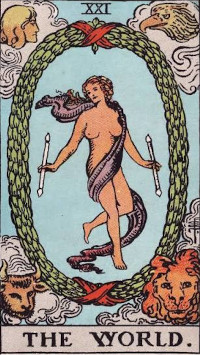
No centro da carta, cercada por uma grande coroa de louros em formato oval, uma figura andrógina dança graciosamente, segurando dois bastões magros nas mãos. A figura representa:
A dançarina está dentro de uma grande grinalda verde amarrada por fitas vermelhas nas pontas (formando o símbolo do infinito em formato vertical). O louro é o símbolo clássico da vitória, do triunfo e da glória eterna. Mostra que o ciclo fechou perfeitamente e que o aluno alcançou a maestria.
Nos quatro cantos da carta, repetindo os mesmos símbolos da Roda da Fortuna, estão as quatro criaturas aladas:
Eles guardam os quatro cantos do universo, indicando que a dançarina uniu e harmonizou todos os elementos da criação dentro de si mesma.
Em ambas as mãos, a dançarina segura pequenos bastões (semelhantes ao do Mago). Isso mostra que ela começou a jornada como O Mago (potencial bruto e ferramentas na mesa) e agora encerra a jornada como a mestra que domina perfeitamente a manifestação da energia entre o céu e a terra.
O Mundo é a última carta dos Arcanos Maiores e o ápice de todo o baralho. A dançarina leve e livre no centro da coroa de louros celebra a conclusão de uma grande fase da vida. O Louco começou sua caminhada no número 0 sem saber de nada, e agora, no número 21, alcançou a totalidade e a iluminação. É a carta da vitória absoluta, da paz de espírito e da sensação de que "estamos exatamente onde deveríamos estar".